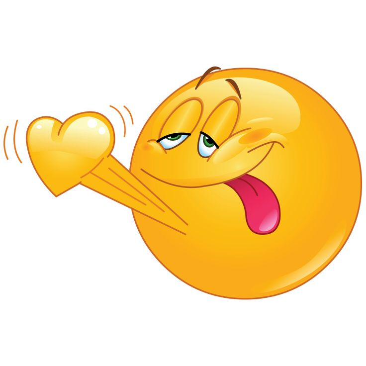
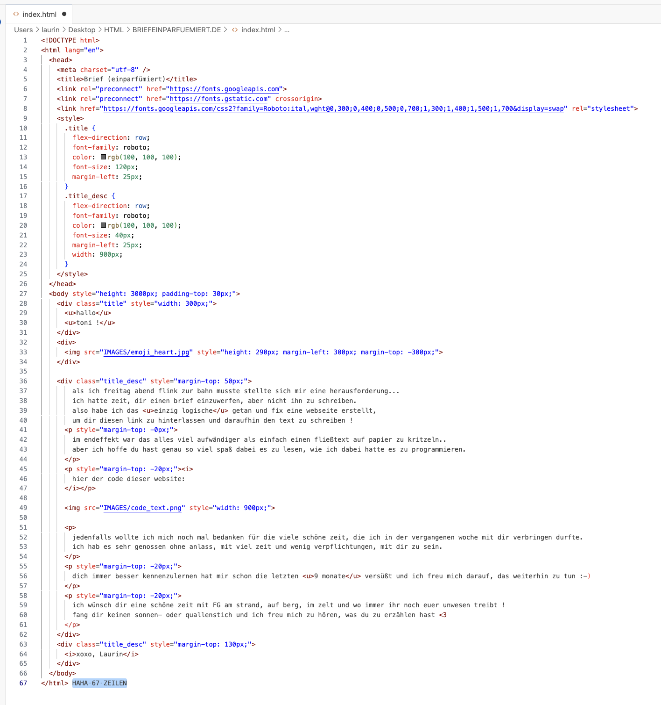

im endeffekt war das alles viel aufwändiger als einfach einen fließtext auf papier zu kritzeln.. aber ich hoffe du hast genau so viel spaß dabei es zu lesen, wie ich dabei hatte es zu programmieren.
hier der code dieser seite:

jedenfalls wollte ich mich noch mal bedanken für die viele schöne zeit, die ich in der vergangenen woche mit dir verbringen durfte. ich hab es sehr genossen ohne anlass, mit viel zeit und wenig verpflichtungen, mit dir zu sein.
dich immer besser kennenzulernen hat mir schon die letzten 9 monate versüßt und ich freu mich darauf, das weiterhin zu tun :-)
ich wünsch dir eine schöne zeit mit FG am strand, auf berg, im zelt und wo immer ihr noch euer unwesen treibt ! fang dir keinen sonnen- oder quallenstich und ich freu mich zu hören, was du zu erzählen hast <3